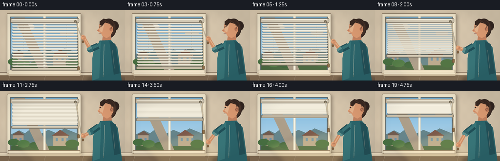
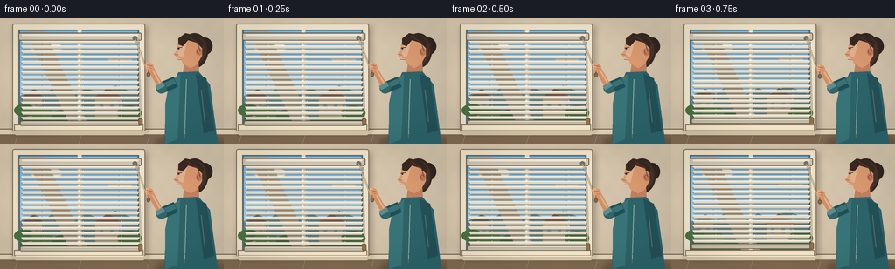

CODING AGENTS AS PIXEL WORLD MODELS
traex/GPT-5.6-Sol · motion_rationality_0055
点击播放 · 原生 RGB 像素
逐轮保存的候选
回放视频、检查图与代码变化。
每份候选均可单独播放。实际图片检查记录在下方工具轨迹中。
候选 01播放与检查图
点击播放 · 原生 RGB 像素


展开代码变化
--- 上一保存版本
+++ 本次保存版本
@@ -0,0 +1,331 @@
+"""Procedurally render a person pulling venetian blinds upward.
+
+The illustration is deliberately built from geometry so the hand, pull cord,
+free cord end, bottom rail, and compressed slats all move coherently.
+"""
+
+from pathlib import Path
+import math
+
+import numpy as np
+from PIL import Image, ImageDraw, ImageFilter
+
+import artifact_io
+
+
+W, H = 256, 144
+N = 20
+S = 4 # supersampling for clean small-scale shapes
+
+
+def sc(v):
+ return int(round(v * S))
+
+
+def box(coords):
+ return tuple(sc(v) for v in coords)
+
+
+def pts(coords):
+ return [(sc(x), sc(y)) for x, y in coords]
+
+
+def smoothstep(x):
+ x = max(0.0, min(1.0, x))
+ return x * x * (3.0 - 2.0 * x)
+
+
+def rgba_layer():
+ return Image.new("RGBA", (W * S, H * S), (0, 0, 0, 0))
+
+
+def composite(base, layer):
+ return Image.alpha_composite(base, layer)
+
+
+def bezier(draw, control, fill, width):
+ out = []
+ for j in range(31):
+ t = j / 30
+ q = []
+ work = [(float(x), float(y)) for x, y in control]
+ while len(work) > 1:
+ work = [
+ (work[k][0] * (1 - t) + work[k + 1][0] * t,
+ work[k][1] * (1 - t) + work[k + 1][1] * t)
+ for k in range(len(work) - 1)
+ ]
+ q.append(work[0])
+ out.append((sc(q[0][0]), sc(q[0][1])))
+ draw.line(out, fill=fill, width=sc(width), joint="curve")
+
+
+def wall_background(frame_idx):
+ yy, xx = np.mgrid[0:H*S, 0:W*S]
+ # Warm room, subtly brighter near the window.
+ glow = np.exp(-(((xx / S - 76) / 130) ** 2 + ((yy / S - 67) / 105) ** 2))
+ r = 205 + 18 * glow - 0.045 * (yy / S)
+ g = 190 + 15 * glow - 0.040 * (yy / S)
+ b = 166 + 11 * glow - 0.028 * (yy / S)
+ # Fixed fine plaster grain (not temporal noise).
+ grain = 1.15 * (np.sin(xx * 0.071) * np.sin(yy * 0.053))
+ arr = np.stack([r + grain, g + grain, b + grain], axis=2)
+ arr = np.clip(arr, 0, 255).astype(np.uint8)
+ return Image.fromarray(arr, "RGB").convert("RGBA")
+
+
+def draw_window(base, progress):
+ # Soft cast shadow from the whole window casing.
+ sh = rgba_layer()
+ sd = ImageDraw.Draw(sh)
+ sd.rounded_rectangle(box((16, 9, 169, 132)), radius=sc(3), fill=(47, 37, 28, 80))
+ sh = sh.filter(ImageFilter.GaussianBlur(sc(3.2)))
+ base = composite(base, sh)
+
+ layer = rgba_layer()
+ d = ImageDraw.Draw(layer)
+ # Outer and inner frame.
+ d.rounded_rectangle(box((14, 6, 166, 130)), radius=sc(2.5), fill=(237, 226, 201, 255),
+ outline=(128, 109, 87, 255), width=sc(1))
+ d.rectangle(box((21, 13, 159, 123)), fill=(91, 105, 108, 255))
+
+ # Outdoor view, clipped by staying within the pane rectangle.
+ for y in range(15, 122):
+ a = (y - 15) / 107
+ col = (int(116 + 74*a), int(178 + 42*a), int(219 + 17*a), 255)
+ d.line(pts([(23, y), (157, y)]), fill=col, width=sc(1.2))
+ # Clouds.
+ d.ellipse(box((35, 31, 58, 39)), fill=(238, 245, 244, 165))
+ d.ellipse(box((47, 28, 71, 39)), fill=(247, 249, 244, 190))
+ d.ellipse(box((123, 43, 151, 51)), fill=(235, 243, 242, 145))
+ # Distant skyline and roofs.
+ d.polygon(pts([(23, 89), (39, 81), (51, 87), (67, 75), (84, 88),
+ (99, 80), (116, 87), (132, 77), (157, 87), (157, 122), (23, 122)]),
+ fill=(102, 133, 139, 255))
+ d.rectangle(box((26, 91, 48, 122)), fill=(173, 155, 135, 255))
+ d.polygon(pts([(24, 91), (38, 82), (51, 91)]), fill=(112, 91, 79, 255))
+ d.rectangle(box((109, 91, 139, 122)), fill=(185, 168, 143, 255))
+ d.polygon(pts([(106, 92), (123, 80), (142, 92)]), fill=(127, 91, 76, 255))
+ for x in (30, 40, 114, 126, 136):
+ d.rectangle(box((x, 97, x+4, 103)), fill=(105, 148, 171, 235))
+ # Greenery along the lower edge.
+ d.rectangle(box((23, 113, 157, 122)), fill=(74, 104, 65, 255))
+ for x, y, rad, col in [
+ (28, 105, 12, (72, 112, 66, 255)), (48, 108, 13, (84, 125, 72, 255)),
+ (71, 111, 11, (64, 102, 61, 255)), (148, 108, 14, (73, 111, 64, 255))]:
+ d.ellipse(box((x-rad, y-rad*.55, x+rad, y+rad*.65)), fill=col)
+
+ # Glass sheen and pane structure.
+ d.polygon(pts([(29, 15), (51, 15), (101, 122), (80, 122)]), fill=(255, 255, 255, 19))
+ d.rectangle(box((88.7, 13, 93.2, 123)), fill=(225, 218, 198, 255))
+ d.rectangle(box((90.0, 15, 91.4, 122)), fill=(250, 246, 230, 255))
+
+ # Deep sill and molded lower edge.
+ d.rectangle(box((16, 122, 164, 129)), fill=(242, 229, 202, 255),
+ outline=(133, 112, 89, 255), width=sc(1))
+ d.polygon(pts([(12, 129), (169, 129), (164, 134), (18, 134)]),
+ fill=(211, 194, 165, 255))
+ d.line(pts([(18, 129), (164, 129)]), fill=(255, 246, 222, 255), width=sc(1))
+ base = composite(base, layer)
+
+ # Growing warm illumination beneath the rising bottom rail.
+ if progress > 0:
+ light = rgba_layer()
+ ld = ImageDraw.Draw(light)
+ alpha = int(38 * progress)
+ ld.polygon(pts([(32, 112), (157, 81), (224, 144), (67, 144)]),
+ fill=(255, 225, 145, alpha))
+ light = light.filter(ImageFilter.GaussianBlur(sc(5)))
+ base = composite(base, light)
+ return base
+
+
+def draw_blinds(base, progress):
+ layer = rgba_layer()
+ d = ImageDraw.Draw(layer)
+ top = 25.5
+ count = 16
+ initial_gap = 5.85
+ # Compression of the complete set of slats is the upward movement.
+ gap = initial_gap * (1.0 - 0.79 * progress)
+ bottom_y = top + (count - 1) * gap + 3.0
+
+ # Ladder tapes recede with the bottom rail.
+ for x in (48, 92, 136):
+ d.line(pts([(x, 23), (x, bottom_y)]), fill=(128, 118, 99, 155), width=sc(0.7))
+ d.line(pts([(x+3, 23), (x+3, bottom_y)]), fill=(238, 229, 206, 190), width=sc(0.7))
+
+ # Draw top to bottom so each lower slat's lip remains readable.
+ for j in range(count):
+ y = top + j * gap
+ # Narrow projected shadow, followed by a gently beveled ivory slat.
+ d.polygon(pts([(24, y+2.1), (160, y+2.1), (157.5, y+4.5), (26.5, y+4.5)]),
+ fill=(71, 65, 56, 82))
+ d.polygon(pts([(24, y), (160, y), (157.2, y+3.3), (26.5, y+3.3)]),
+ fill=(225, 218, 200, 255))
+ d.line(pts([(25, y+.45), (159, y+.45)]), fill=(253, 248, 233, 255), width=sc(.65))
+ d.line(pts([(27, y+3.0), (157, y+3.0)]), fill=(156, 145, 125, 210), width=sc(.55))
+
+ # Substantial rising lower rail provides an unambiguous motion cue.
+ rail_y = bottom_y + 1.5
+ d.rounded_rectangle(box((23, rail_y, 161, rail_y+5.7)), radius=sc(1.5),
+ fill=(198, 187, 165, 255), outline=(105, 96, 82, 255), width=sc(.8))
+ d.line(pts([(26, rail_y+1), (158, rail_y+1)]), fill=(246, 239, 220, 255), width=sc(.7))
+
+ # Headrail stays fixed above the lifting slats.
+ d.rounded_rectangle(box((21, 16.5, 162, 25.5)), radius=sc(2),
+ fill=(205, 195, 175, 255), outline=(104, 94, 79, 255), width=sc(1))
+ d.rectangle(box((25, 18.2, 158, 20.2)), fill=(239, 232, 214, 255))
+ d.ellipse(box((151.5, 20, 157, 25.5)), fill=(121, 111, 92, 255))
+ return composite(base, layer), rail_y
+
+
+def draw_person_and_cords(base, progress, hand_y):
+ # Person's floor shadow.
+ sh = rgba_layer()
+ sd = ImageDraw.Draw(sh)
+ sd.ellipse(box((179, 133, 257, 151)), fill=(49, 42, 36, 75))
+ sh = sh.filter(ImageFilter.GaussianBlur(sc(3)))
+ base = composite(base, sh)
+
+ layer = rgba_layer()
+ d = ImageDraw.Draw(layer)
+ lean = 1.5 * progress
+
+ # Back hair and compact bun.
+ d.ellipse(box((225+lean, 22, 243+lean, 42)), fill=(48, 36, 31, 255))
+ d.ellipse(box((207+lean, 17, 238+lean, 57)), fill=(53, 39, 33, 255))
+ d.ellipse(box((211+lean, 20, 236+lean, 53)), fill=(71, 50, 40, 255))
+
+ # Neck, then torso in a textured teal shirt.
+ d.polygon(pts([(211+lean, 49), (227+lean, 49), (228+lean, 70),
+ (208+lean, 70)]), fill=(190, 127, 94, 255))
+ d.polygon(pts([(204+lean, 62), (227+lean, 61), (240+lean, 76),
+ (249+lean, 144), (188+lean, 144), (190+lean, 94)]),
+ fill=(43, 99, 105, 255))
+ d.polygon(pts([(224+lean, 63), (236+lean, 69), (245+lean, 129),
+ (233+lean, 132)]), fill=(35, 80, 87, 255))
+ d.polygon(pts([(194+lean, 72), (206+lean, 64), (203+lean, 139),
+ (189+lean, 144), (189+lean, 98)]), fill=(56, 116, 119, 255))
+ d.line(pts([(213+lean, 70), (211+lean, 137)]), fill=(83, 137, 136, 130), width=sc(1))
+ d.line(pts([(230+lean, 82), (234+lean, 119)]), fill=(29, 74, 82, 170), width=sc(1))
+
+ # Face in left-facing profile.
+ face = [(210+lean, 21), (224+lean, 21), (231+lean, 28), (231+lean, 43),
+ (225+lean, 53), (218+lean, 57), (209+lean, 52), (207+lean, 47),
+ (201+lean, 44), (198.5+lean, 41), (202.5+lean, 37), (203+lean, 29)]
+ d.polygon(pts(face), fill=(215, 151, 111, 255))
+ # Face highlight, ear and profile details.
+ d.polygon(pts([(207+lean, 25), (215+lean, 23), (209+lean, 45),
+ (203+lean, 42)]), fill=(230, 169, 125, 180))
+ d.ellipse(box((224+lean, 34, 231+lean, 43)), fill=(190, 124, 91, 255))
+ d.arc(box((225+lean, 36, 229.5+lean, 41)), 80, 285, fill=(125, 78, 62, 255), width=sc(.65))
+ d.line(pts([(202.5+lean, 34), (208+lean, 33)]), fill=(72, 48, 39, 255), width=sc(1))
+ d.ellipse(box((203.5+lean, 34, 205.2+lean, 35.5)), fill=(38, 37, 33, 255))
+ d.line(pts([(199.5+lean, 41.5), (204+lean, 42)]), fill=(151, 84, 72, 255), width=sc(.65))
+ d.line(pts([(202+lean, 47), (207+lean, 47.5)]), fill=(130, 65, 61, 255), width=sc(.75))
+ # Hair cap and a few direction strands.
+ d.polygon(pts([(204+lean, 30), (204+lean, 23), (212+lean, 17), (226+lean, 20),
+ (233+lean, 28), (231+lean, 34), (225+lean, 28), (215+lean, 25),
+ (209+lean, 32)]), fill=(56, 40, 33, 255))
+ d.line(pts([(214+lean, 20), (226+lean, 28), (229+lean, 38)]), fill=(91, 61, 47, 255), width=sc(.7))
+
+ # Arm kinematics: shoulder stays anchored; elbow rotates as the hand pulls down.
+ shoulder = (201+lean, 73)
+ elbow = (184.5 + .7*progress, 80 + 7*progress)
+ wrist = (171.5, hand_y)
+ # Upper arm/sleeve under the forearm.
+ d.line(pts([shoulder, elbow]), fill=(32, 78, 86, 255), width=sc(13), joint="curve")
+ d.line(pts([(shoulder[0]-1, shoulder[1]-1), (elbow[0], elbow[1]-1)]),
+ fill=(56, 114, 117, 255), width=sc(6), joint="curve")
+ d.ellipse(box((elbow[0]-6.3, elbow[1]-6.3, elbow[0]+6.3, elbow[1]+6.3)),
+ fill=(48, 101, 106, 255))
+ # Rolled sleeve cuff.
+ angle_dx, angle_dy = wrist[0]-elbow[0], wrist[1]-elbow[1]
+ length = max(1, math.hypot(angle_dx, angle_dy))
+ cuff_end = (elbow[0] + angle_dx/length*5.5, elbow[1] + angle_dy/length*5.5)
+ d.line(pts([elbow, cuff_end]), fill=(93, 141, 139, 255), width=sc(10), joint="curve")
+ # Forearm and rounded wrist.
+ d.line(pts([cuff_end, wrist]), fill=(207, 142, 103, 255), width=sc(7.3), joint="curve")
+ d.line(pts([(cuff_end[0]+1, cuff_end[1]-1), (wrist[0]+.5, wrist[1]-1)]),
+ fill=(231, 168, 122, 180), width=sc(2.1), joint="curve")
+
+ base = composite(base, layer)
+
+ # Cords sit over the forearm but beneath the gripping fingers.
+ cord = rgba_layer()
+ cd = ImageDraw.Draw(cord)
+ cord_col = (111, 93, 67, 255)
+ # Taut pulled strand.
+ cd.line(pts([(154.5, 23), (166.2, hand_y-1), (169.5, hand_y)]),
+ fill=(64, 54, 43, 95), width=sc(2.1))
+ cd.line(pts([(154.5, 23), (166.2, hand_y-1), (169.5, hand_y)]),
+ fill=(218, 201, 165, 255), width=sc(.85))
+ # Free end rises while the person pulls the opposite end down.
+ free_y = 116 - 39 * progress
+ bezier(cd, [(158, 23), (159, 52), (161, free_y-13), (160.5, free_y)],
+ (67, 56, 44, 95), 2.0)
+ bezier(cd, [(158, 23), (159, 52), (161, free_y-13), (160.5, free_y)],
+ (222, 204, 167, 255), .8)
+ cd.rounded_rectangle(box((158.2, free_y-1, 163, free_y+7)), radius=sc(1.5),
+ fill=(145, 113, 73, 255), outline=(80, 63, 46, 255), width=sc(.6))
+ base = composite(base, cord)
+
+ # Hand wraps visibly around the cord.
+ hand = rgba_layer()
+ hd = ImageDraw.Draw(hand)
+ hd.ellipse(box((166.0, hand_y-4.7, 175.8, hand_y+5.0)), fill=(214, 149, 108, 255))
+ hd.rounded_rectangle(box((166.7, hand_y-5.5, 170.3, hand_y+2.0)), radius=sc(1.4),
+ fill=(232, 169, 124, 255))
+ hd.line(pts([(168, hand_y-2.5), (173.8, hand_y-1.3)]), fill=(137, 86, 70, 255), width=sc(.65))
+ hd.line(pts([(168, hand_y+.2), (173.7, hand_y+1.2)]), fill=(146, 91, 73, 255), width=sc(.6))
+ # Small wooden pull at the held end, immediately below the fist.
+ hd.line(pts([(169.7, hand_y+3), (169.7, hand_y+7)]), fill=cord_col, width=sc(.8))
+ hd.ellipse(box((167.7, hand_y+6, 171.8, hand_y+11)), fill=(139, 104, 67, 255),
+ outline=(76, 58, 43, 255), width=sc(.5))
+ return composite(base, hand)
+
+
+def render_frame(index):
+ t = index / (N - 1)
+ # Brief settle at both ends, with one deliberate, continuous downward pull.
+ progress = smoothstep((t - 0.055) / 0.86)
+ hand_y = 56 + 55 * progress
+
+ im = wall_background(index)
+
+ # Baseboard and floor behind the figure.
+ room = rgba_layer()
+ rd = ImageDraw.Draw(room)
+ rd.rectangle(box((0, 132, 256, 144)), fill=(127, 105, 81, 255))
+ rd.rectangle(box((0, 127, 256, 133)), fill=(226, 211, 185, 255))
+ rd.line(pts([(0, 127), (256, 127)]), fill=(115, 96, 78, 255), width=sc(1))
+ for x in (20, 93, 171, 237):
+ rd.line(pts([(x, 134), (x-3, 144)]), fill=(103, 83, 64, 110), width=sc(.6))
+ im = composite(im, room)
+
+ im = draw_window(im, progress)
+ im, _ = draw_blinds(im, progress)
+ im = draw_person_and_cords(im, progress, hand_y)
+
+ # Gentle cinematic edge falloff keeps attention on action.
+ vignette = rgba_layer()
+ va = np.zeros((H*S, W*S, 4), dtype=np.uint8)
+ yy, xx = np.mgrid[0:H*S, 0:W*S]
+ nx = (xx - W*S/2) / (W*S/2)
+ ny = (yy - H*S/2) / (H*S/2)
+ edge = np.clip((nx*nx + ny*ny - .52) * 22, 0, 15).astype(np.uint8)
+ va[:, :, 3] = edge
+ vignette = Image.fromarray(va, "RGBA")
+ im = composite(im, vignette)
+
+ return np.asarray(im.convert("RGB").resize((W, H), Image.Resampling.LANCZOS), dtype=np.uint8)
+
+
+def main():
+ frames = np.stack([render_frame(i) for i in range(N)], axis=0)
+ artifact_io.save(frames, Path(__file__).resolve().parent)
+
+
+if __name__ == "__main__":
+ main()
可观测工具轨迹
实际执行的命令与返回图片。
命令 1exit 0
/bin/bash -lc "cat prompt.txt && printf '\\n--- GENERATION_RULES.md ---\\n' && cat GENERATION_RULES.md"
命令 2exit 0
/bin/bash -lc "cat task_spec.json && printf '\\n--- FILES ---\\n' && find . -maxdepth 2 -type f -printf '%p\\n' | sort"
命令 3exit 0
/bin/bash -lc "ffmpeg -version | head -5; printf '\\nPython packages:\\n'; python - <<'PY' mods=['PIL','numpy','cv2','imageio','moviepy','cairo'] for m in mods: try: x=__import__(m); print(m, getattr(x,'__version__','ok')) except Exception as e: print(m,'NO',e) PY"
命令 4exit 0
/bin/bash -lc 'cat artifact_io.py'
命令 5exit 0
/bin/bash -lc 'python generate.py'
命令 6exit 0
/bin/bash -lc '(command -v chafa || true); (command -v viu || true); (command -v jp2 || true); ls -lh frames/00.png frames/08.png frames/15.png frames/19.png inspection.png index.html pixels.npz'
命令 7exit 0
/bin/bash -lc "python - <<'PY'
import json, numpy as np
from pathlib import Path
from PIL import Image
p=Path('.')
z=np.load('pixels.npz')['pixels']
print('pixels',z.shape,z.dtype,'files',len(list((p/'frames').glob('*.png'))))
ims=np.stack([np.array(Image.open(p/'frames'/f'{i:02}.png')) for i in range(20)])
print('frames',ims.shape,ims.dtype,'range',ims.min(),ims.max())
mad=np.abs(np.diff(ims.astype(int),axis=0)).mean((1,2,3))
print('adjacent MAD',np.round(mad,2))
print('first-last MAD',np.abs(ims[-1].astype(int)-ims[0]).mean())
print('sizes',{x.name:x.stat().st_size for x in [p/'pixels.npz',p/'inspection.png',p/'transition_check.png',p/'index.html']})
# expected analytical landmarks from exact easing
smooth=lambda x:max(0,min(1,x))**2*(3-2*max(0,min(1,x)))
for i in [0,3,7,11,15,19]:
t=i/19; q=max(0,min(1,(t-.055)/.86)); pr=q*q*(3-2*q)
print(i, 'progress',round(pr,3),'hand_y',round(56+55*pr,1),'rail_y',round(25.5+15*5.85*(1-.79*pr)+4.5,1),'free_y',round(116-39*pr,1))
PY"保存候选 1 份；完成命令 7 次；可验证图片返回 0 张。原始 API 响应与完整日志保留在本地。